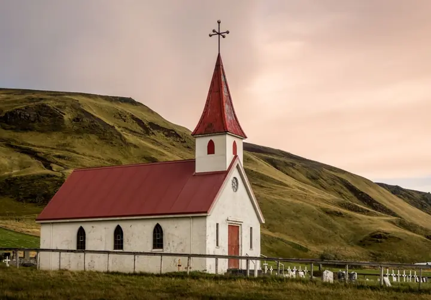
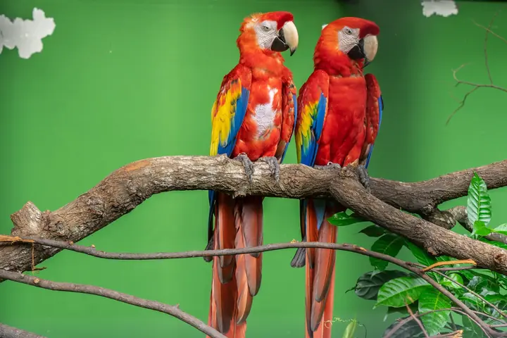
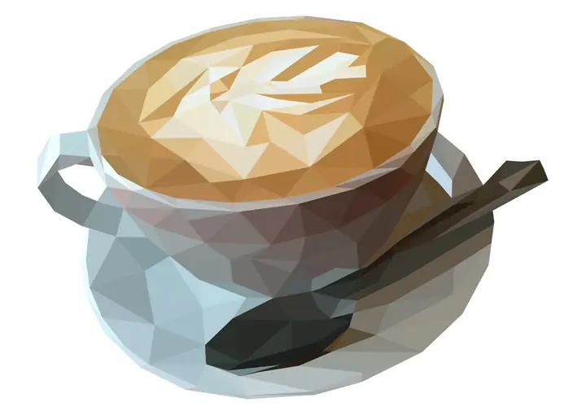
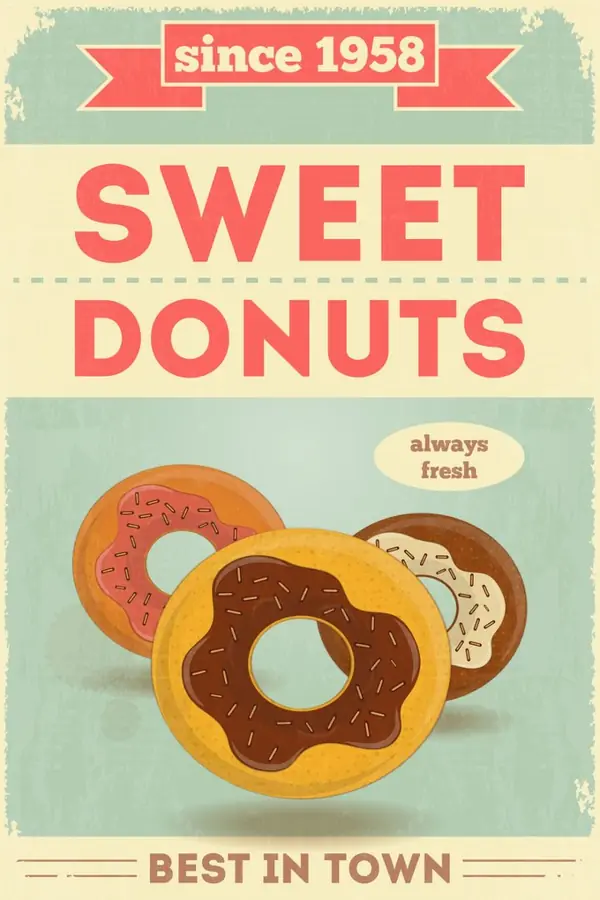
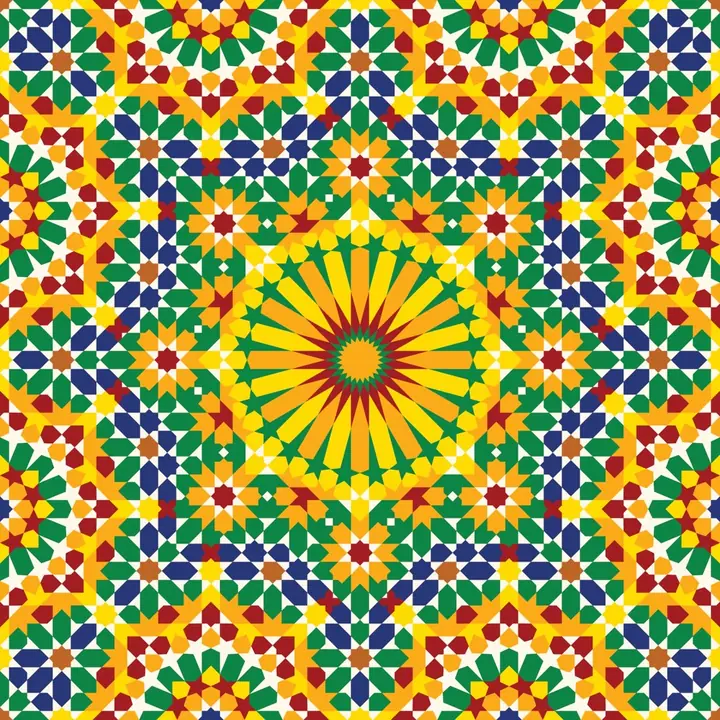
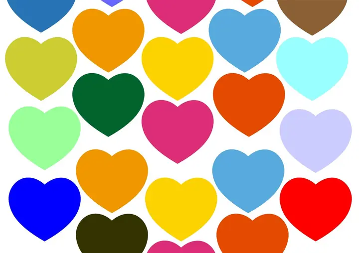
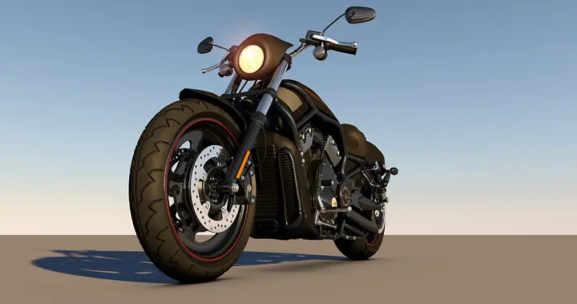
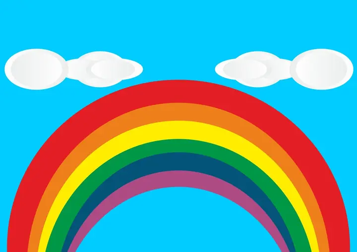
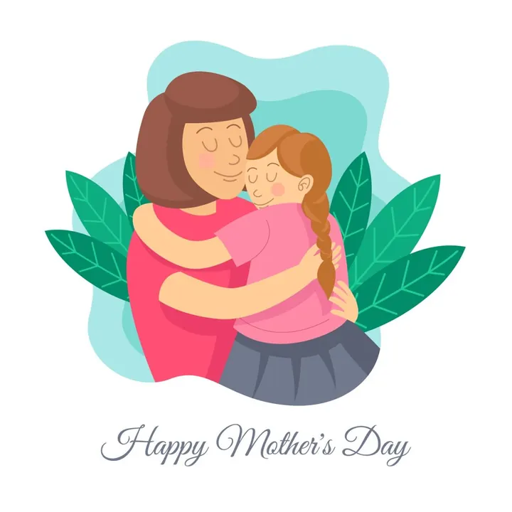

33 pastas por tema
E subpastas dentro delas: Mar, Cachoeiras, Café, Cerveja, Vinho, Sem Fundo. Você abre direto o nicho do pedido.
Acervo digital para sublimação e personalizados
13.978 arquivos em 33 pastas por tema. Paisagens, flores, animais, texturas, frases, datas comemorativas e nichos como barbearia e churrasco. Escolha a arte, imprima e prense.
Para canecas, camisetas, azulejos, almofadas, quadros e posts.
O que tem dentro
E subpastas dentro delas: Mar, Cachoeiras, Café, Cerveja, Vinho, Sem Fundo. Você abre direto o nicho do pedido.
Muitos sem fundo, prontos para colocar sobre qualquer cor, textura ou foto.
Arquivos AI, EPS e SVG nas artes editáveis de Dia das Mães, para trocar nome, frase e cores.
Um arquivo típico de Paisagens tem 5,5 MB, e muitos passam de 20 MB.
716 artes de Dia das Mães, 89 de Dia dos Namorados e 21 de Dia dos Pais.
São 73,6 GB no total. Você baixa só os temas que for usar.
Temas em destaque · 17 pastas
Os 17 temas abaixo reúnem 4.797 arquivos. Toque em um tema para ver amostras dele na galeria.
Mar, cachoeiras, cidades, deserto, neve, céu, noite, primavera, 7 maravilhas do mundo e artes digitais
Artes prontas, PNG sem fundo e artes editáveis

Fé, gratidão, cruzes e mosaicos

Fotos de bichos e arte geométrica

Café, cerveja, vinho e frases de boteco
Motivação, humor e frases para o lar

Pôsteres vintage de comida, música e garagem

Padrões, madeira, papel, dourado e degradês
Clássicos, esportivos e arte aquarelada
Close-ups, buquês e campos floridos

Corações, ursinhos e frases de amor

Custom, esportivas, motocross e vintage
Placas, selos e cardápios

Quarto de bebê, bichinhos e frases
Ícones, placas e ilustrações
Frases tipográficas
Frutas, saladas e café da manhã
Galeria · 66 amostras
Amostras reais do acervo. Clique numa imagem para ampliar e ver em qual pasta ela está e o tamanho do arquivo original.
São 13.978 arquivos como esses, separados em 33 pastas por tema.
Quero o acervoSimulador
Escolha uma arte e veja como ela fica na área de impressão padrão de uma caneca de cerâmica.
Padrão de escamas coloridas
Já vem no acervo

#incluso 1
71 artes com os arquivos abertos em AI, EPS, SVG e PSD, para trocar nome, frase e cores antes de imprimir.
#incluso 2
115 elementos já recortados, como corações, flores, molduras e frases, para montar a arte sobre qualquer fundo.
#incluso 3
51 kits com várias paisagens no mesmo estilo, bons para coleções e conjuntos de produtos.
Para quem é
Se você transforma arte em produto, o acervo encurta a parte de procurar e montar.
Calendário
Contagem até as próximas datas comemorativas e quantas artes o acervo tem para cada uma.
domingo, 9 de maio de 2027
216dias
716 artes, incluindo PNG sem fundo e artes editáveis
sábado, 12 de junho de 2027
250dias
89 artes de corações, ursinhos e frases de amor
domingo, 8 de agosto de 2027
307dias
21 frases tipográficas prontas
Como usar
Abra a pasta do nicho do seu cliente: Mar, Cachoeiras, Dia das Mães, Barbearia, Café e outras.
Monte a arte no tamanho do produto. Para caneca, 20 × 9,5 cm a 300 dpi.
Use papel sublimático e tinta para sublimação, com a imagem espelhada.
Siga o tempo e a temperatura indicados para a sua prensa e para o produto.
O que você recebe
Dúvidas
São 13.978 arquivos em 33 pastas por tema, quase todas com subpastas. Paisagens, por exemplo, se divide em Mar, Cachoeiras, Cidades, Deserto, Neve, Céu, Noite, Primavera, 7 Maravilhas do Mundo e Artes Digitais.
9.901 fotos e artes em JPG e 3.886 PNG, muitos sem fundo. As artes editáveis de Dia das Mães trazem ainda 148 vetores em AI, EPS e SVG e 4 arquivos PSD.
Varia de pasta para pasta. Um arquivo típico de Paisagens tem 5,5 MB, e muitos passam de 20 MB. Para caneca, prefira arquivos com pelo menos 2362 px de largura, que é o tamanho de 20 cm a 300 dpi.
O acesso é por uma pasta na nuvem. Você baixa só os temas que for usar, sem precisar guardar os 73,6 GB de uma vez.
Antes de vender, confira se a arte não traz marca registrada, personagem ou foto com direitos reservados. Temas como paisagens, flores, texturas e frases costumam ser os mais seguros para começar.
Ainda ficou com dúvida? Fale com a gente pelo WhatsApp.
Chamar no WhatsApp